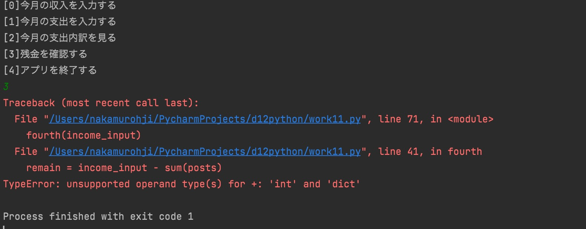

第6回
家計簿アプリ
- def first():
- print("今月の収入を入力してください。")
- income_input = str(input())
- print("今月の収入は"+ income_input +"円です。")
- return income_input
- def second():
- print("今月の支出を入力してください。")
- def put_second():
- post = {}
- print("支払いの内訳を入力してください。(例；お菓子、、、など)")
- post["pay"] = input()
- print("金額を入力してください。(例；１０８)")
- post["money"] = input()
- print(post["pay"]+" : "+"?"+post["money"])
- posts.append(post)
- return posts
- def other_second():
- print("入力された値は無効な値です。")
- while True:
- print("[0] : 入力する。")
- print("[1] : 入力を終える。")
- sub_input = int(input())
- if sub_input == 0:
- put_second()
- elif sub_input == 1:
- break
- else:
- other_second()
- def third():
- print("[ 今月の支出内訳一覧を表示します ]")
- for i,post in enumerate(posts):
- print("["+str(i)+"] :"+post['pay']+" : "+post['money'])
- def fourth(income_input):
- remain = income_input - sum(posts)
- if remain <= 0:
- print("残金がありません。")
- def end():
- exit()
- def exeption():
- print("入力された値は無効な値です。")
- posts = []
- income_input = 0
- while True:
- print("[0]今月の収入を入力する")
- print("[1]今月の支出を入力する")
- print("[2]今月の支出内訳を見る")
- print("[3]残金を確認する")
- print("[4]アプリを終了する")
- main_input = int(input())
- if main_input == 0:
- income_input = first()
- elif main_input == 1:
- second()
- elif main_input == 2:
- third()
- elif main_input == 3:
- fourth(income_input)
- elif main_input == 4:
- end()
- else:
- exeption()

3を入力するとなぜかエラーになってしまう。
対処方法がわからず中途半端な形で終わってしまった。